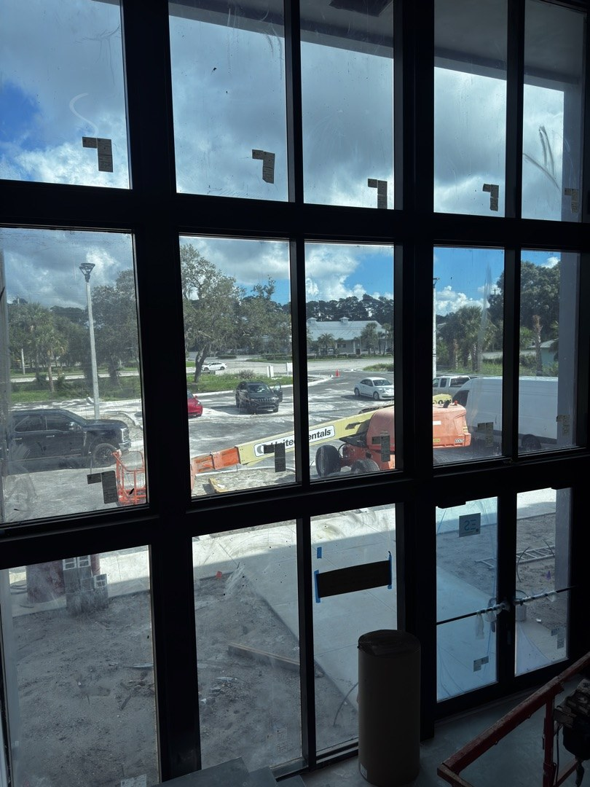

Read the issued specifications beside the plans, schedules and addenda. Record what the project requires, which document supports the proposed assembly and who must resolve each open item before release.

Start with the project's actual section numbers
Division 08 brings opening-related work into the project manual. A glazing package can involve entrances, storefront, curtainwall, windows, glass and hardware, with requirements spread across several sections. Use the issued table of contents and section titles to find the work that applies to the project.
CSI's MasterFormat guidance describes how specifications organize work results. Follow the project's selected edition, edited sections and scope boundaries. Keep the actual section reference beside each requirement in the bid review.
Read General, Products and Execution together
The three-part section format separates administrative requirements, product requirements and execution requirements. SpecsIntact's section-format reference explains that structure. The project's edited text determines what must be supplied and performed.
| Part | Read for | Record before pricing |
|---|---|---|
| Part 1: General | Section-specific procedures, submittals, qualifications and coordination requirements. | Submission list, review responsibilities, required samples or mockups, and the applicable substitution procedure. |
| Part 2: Products | Named products, materials, configurations and performance criteria. | Proposed manufacturer and system, glass makeup, finish, hardware interfaces and supporting documents. |
| Part 3: Execution | Preparation, installation, inspection, testing and protection requirements. | Substrate acceptance, field work, testing responsibilities, access, protection and closeout items. |
Carry the product review through the installation and testing requirements. Read the relevant drawings and all three parts of the section before completing the proposal.
Trace the specified assembly to its evidence
- Framing and openings: match the system name to the opening marks, elevations, sections, operation and entrance interfaces.
- Glass: reconcile the glass schedule with the framing documents, including the specified makeup, treatment, coating, appearance and safety requirements.
- Performance: record the project's structural, air, water, thermal and impact criteria with their referenced test or rating basis. Identify the documents covering the proposed configuration.
- Interfaces: identify perimeter seals, adjacent waterproofing, supporting construction, hardware, electrical and access-control work assigned to each trade.
For energy criteria, record the rating basis and the proposed configuration instead of deciding compliance from a generic framing description. NFRC's commercial certification guidance explains the role of certified fenestration performance ratings. Compare the required documentation with the project's energy requirements.
Check the approval path and conditions of use
Florida's product-approval review needs the actual product documents. DBPR's product-approval FAQ distinguishes state and local approval and describes state approvals with HVHZ scope for use in Miami-Dade. Review the applicable approval document and its limitations for the project location.
Record the approval path required for the project, the applicable code edition, the document's current status and its conditions of use. Check the proposed size, glass, anchorage and substrate against that document. Reconcile the contract specifications and the permit review requirements before changing the specified product.
The Florida Product Approval search includes fields for code version, manufacturer, product and HVHZ use. Use the ACG architect resource library to find source documents, then check the configuration required for each opening.
Assign the engineering and field-test responsibilities
Read the project's requirements for anchor design, calculations, shop drawings, samples, mockups and field testing. Establish who supplies each item and who reviews it. Keep unresolved responsibility or configuration questions visible in the scope review.
Where testing is specified, identify its method, location, sequence, acceptance criteria, witnesses and correction procedure. Coordinate these details before fabrication and installation commitments are made.
Glazing substitution approval matrix
Use a comparison for each proposed substitution. Cite the issued requirement and the supporting document for the exact proposed configuration. Follow the project's submission procedure and deadlines, including its rules for reporting differences.
This blank matrix is a review aid. Enter project evidence in the empty cells and use the project's required review codes for the decision. A reviewer must resolve the actual proposed change.
| Evidence row | Specified basis and source | Proposed configuration and evidence | Project review decision |
|---|---|---|---|
| Manufacturer and system | |||
| Product approval and conditions of use | |||
| Structural, air and water criteria | |||
| Glass makeup and safety requirements | |||
| Thermal rating and its basis | |||
| Frame dimensions and sightlines | |||
| Finish and appearance | |||
| Hardware and entrance interfaces | |||
| Warranty documents and terms | |||
| Samples, mockups and field testing | |||
| Release, delivery and installation effects |
Documents to reconcile with the comparison
- Current product data and the applicable approval documents.
- Test or rating evidence tied to the proposed configuration and specified criteria.
- Opening details, glass schedules, finish samples and hardware information needed for review.
- Required calculations and shop drawings, with the assigned design responsibilities identified.
- A clear list of differences, open questions and the proposed effect on scope or schedule.
Send a complete glazing bid package
Send the current drawings, specifications, schedules and addenda with the project address and bid date. Include the installation period, site access restrictions, proposed substitutions and any unresolved scope questions.
ACG reviews these inputs for its Florida Division 08 glazing scope. Use the glazing submittal guide to organize the document list, then send the project package for review.